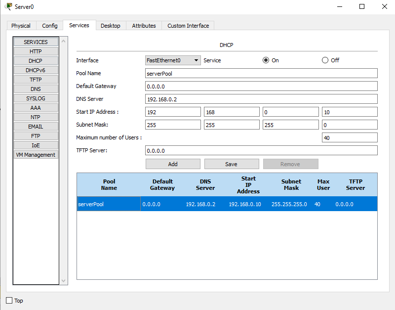

Redes e Configuração de Servidores
A criação e configuração de uma rede interna em que um servidor web (HTTP), um servidor DNS e um servidor DHCP estão inseridos
envolve diversos elementos e componentes de rede, que podem ser simulados utilizando ferramentas como o Cisco Packet Tracer.
Abaixo, vamos detalhar os conceitos e a configuração necessária para o funcionamento desses servidores, além de fornecer um
panorama geral dos equipamentos de rede e sua função.

Equipamentos e Suas Funções
Roteador: Encaminha pacotes entre redes diferentes (por exemplo, entre a rede local e a
internet).
Switch: Conecta dispositivos dentro de uma mesma rede local (LAN) e permite a comunicação
interna.
Access Point (AP): Fornece conectividade sem fio aos dispositivos na rede.
Firewall: Controla e monitora o tráfego de dados entre redes, ajudando a proteger contra
acessos não autorizados.
Conceito de Servidor
Um servidor é um dispositivo ou software que oferece serviços, recursos ou dados para outros dispositivos (clientes) na rede.
Exemplo: Servidores de arquivos, servidores web, servidores de banco de dados, entre outros.
Servidores e Suas Funções
Servidor DNS (Domain Name System): O servidor DNS traduz nomes de domínio em endereços IP.
Isso permite que os usuários acessem sites usando nomes amigáveis, como "www.exemplo.com", em vez de precisar memorizar os endereços
IP numéricos.
Servidor HTTP (HyperText Transfer Protocol): O servidor HTTP é responsável por hospedar páginas
web e enviá-las aos navegadores dos usuários quando solicitadas. Ele utiliza o protocolo HTTP para receber requisições de
páginas e enviar respostas com o conteúdo solicitado.
Servidor DHCP (Dynamic Host Configuration Protocol): O servidor DHCP atribui automaticamente
endereços IP aos dispositivos na rede. Ele elimina a necessidade de configuração manual de endereços, facilitando a administração
da rede e a conexão de novos dispositivos.

Modelos de Redes e Protocólos
Modelo OSI
O Modelo OSI é um modelo de referência teórico que descreve como os dados são transmitidos entre dispositivos em uma rede. Ele é
dividido em 7 camadas, desde a Camada Física (que lida com os sinais elétricos e a transmissão de dados) até a Camada de
Aplicação (onde ocorrem as interações diretas com os usuários e os programas, como navegadores web).
Modelo TCP/IP
O modelo TCP/IP é a base para a comunicação na internet e tem 4 camadas principais:
Camada de Aplicação: Onde ocorrem as interações com os aplicativos (ex.: HTTP, FTP).
Camada de Transporte: Controla o fluxo de dados e garante que cheguem ao destino (ex.: TCP, UDP).
Camada de Internet: Lida com endereçamento e roteamento de pacotes (ex.: IP).
Camada de Acesso à Rede: Controla a comunicação física entre dispositivos na rede (ex.: Ethernet).
Cabos de Rede - Pinagem
Os cabos Ethernet são usados para conectar dispositivos em uma rede local. O conector mais comum é o RJ45, e a pinagem pode seguir dois padrões:
T568A ou T568B. Ambos os padrões definem a ordem dos fios dentro do cabo, mas a escolha entre eles depende da padronização da rede.
Crimpagem de Cabos de Rede:
Oferecemos serviço especializado de crimpagem de cabos de rede, garantindo conexões rápidas e seguras. Com equipamentos de alta qualidade, realizamos a montagem e manutenção de cabos RJ45, atendendo empresas de todos os portes.
Conte conosco para otimizar sua infraestrutura de TI com eficiência e confiabilidade.